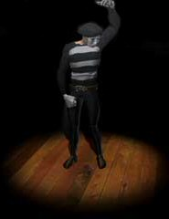
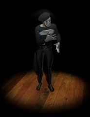
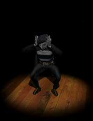
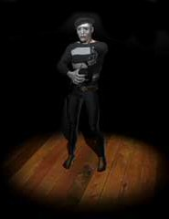

")
Schädelpost 3
In der 3. Ausgabe der Schädelpost melden sich mal wieder illustre Persönlichkeiten zu Wort, unter anderem Seren (die geheimnisvolle Kristall-Göttin der Elfen), Peter bzw. Petra (der/die Schönheitsmagier/-in) und der Königs-Schwarzdrache (das ehemals stärkste Monster RuneScapes).
Außerdem beweisen die Kühe und Schafe von Zanaris ihre poetische Ader und Räuber Plotzenhotz sinniert über "Karma".
Liebe Elfen,
ich habe kürzlich eure Wälder bereist, um mehr über Seren zu erfahren, konnte aber nicht viel herausfinden. Ihr seid doch alle Anhänger dieser Göttin - könnt ihr mir nicht mehr über sie erzählen? Sie scheint eine tolle Göttin zu sein und ich würde gerne mehr über sie und die Völker, die sie anbeten, erfahren.
Mit freundlichen Grüßen
-Kingalex2002
Lieber Kingalex2002,
es ist viel zu schwierig, Seren mit den Worten der Menschen zu beschreiben. Daher habe ich dir ein Bild mitgeschickt. Denk daran: Du hältst sie in den Händen, wann immer du einen Kristall-Bogen oder einen Kristall-Schild handhabst. Sie ist der Samen, aus dem das Leben kommt und in dem es wieder endet.
Bezüglich ihrer Anhänger: Wir Elfen folgen alle dem Weg, den sie uns vorgegeben hat... aber ich kenne keinen Menschen, der sich für diesen Weg entschieden hat.
Segensreiche Grüße!

ich schreibe Ihnen, weil mich eine Frage quält: Woher haben Sie Ihr Yin-Yang-Amulett? Ich habe überall danach gesucht, alle möglichen und unmöglichen Leute gefragt - aber keiner konnte es mir sagen! Woher haben Sie das Amulett? Kann ich auch irgendwann mal eins bekommen? Außerdem würde ich gerne wissen, wer Ihnen die Macht verliehen hat, das Aussehen der Leute zu verändern. Kann ich das auch lernen? Und können Sie nur die Hautfarbe und das Geschlecht verändern - oder noch mehr?
Danke,
Stormcrafter vom Kindred Clan
PS: Wie heißen Sie eigentlich WIRKLICH?
Sehr geehrter Stormcrafter,
Meine Macht schöpfe ich, ehrlich gesagt, voll und ganz aus dem Amulett, das ich trage. Ich musste ein ganzes Nest Gazulivögel (mittlerweile ausgestorben) dafür töten. Ich legte das Schmuckstück an - und plötzlich wuchs mir das Haar bis zur Taille. Die Kräfte, die ich heute besitze, habe ich mir durch jahrelanges Üben angeeignet. Früher habe ich den Leuten auch die Haare geschnitten, aber mit fortschreitendem Alter wurden meine Augen zu schlecht und ich wollte meinen Kunden nicht aus Versehen ein Ohr absäbeln!
Ich habe eigentlich nie erwägt, mein Amulett zu verkaufen - das wäre für mich äußerst geschäftsschädlich. Viele Leute sagen mir allerdings, wie schön sie es finden. Vielleicht sollte ich Doric mal fragen, ob er mir ein paar Kopien anfertigen kann. Schauen Sie vorbei, wenn Sie das nächste Mal in der Gegend sind, dann können wir etwas aushandeln. Natürlich würde ich Ihnen bloß eine Kopie verkaufen, also machen Sie sich keine Hoffnungen auf meinen Job! Ich will schließlich nicht wieder Löffel verbiegen müssen, um mir mein täglich Brot zu verdienen.
PS: Ich heiße Peter oder Petra, je nachdem, wie fraulich ich mich gerade fühle.
ist Ihnen schon mal aufgefallen, dass Sie nicht mehr das stärkste Monster auf RuneScape sind? Die Kalphiten-Königin und der Chaos-Elementar lassen Sie ziemlich alt aussehen. Das können Sie nicht zulassen! Wehren Sie sich! Die beiden machen Sie doch mit links fertig! Sagen Sie mir Bescheid, wenn Sie wieder das stärkste Monster auf RuneScape sind.
Bis denn,
Hobbman
Unsere Zeit hier ist kurz. Unsere Herrscher überlassen uns diesen Ort, damit wir den Menschen falsche Hoffnungen machen können. Niederlage bedeutet Wiedergeburt, Wiedergeburt bedeutet Konflikt. Konflikt bedeutet Leidenschaft, Leidenschaft bedeutet Macht. Doch Macht hat ihren Preis. Neue Herausforderungen bringt die Menschen nur dem Ende näher, an den Rand des Ungewissen, zu den Ahnen, die keine Gnade kennen.
Dein Verständnis von Stärke wird dir das Genick brechen, du Appetithappen!
Hallo! Ich muss schon sagen, ich bin schwer beeindruckt, dass ich ohne Amulett der Schaf- oder Kuhsprache mit euch reden kann.
Wie habt ihr die Menschensprache gelernt? Haben euch die Feen das beigebracht? Oder ist unser glorreicher Gott Guthix dafür verantwortlich? (Guthix sei gepriesen!) Bitte sagt mir, was da abgeht.
(PS: Postboten Peter - du brauchst das Abenteuer 'Die verlorene Stadt', um nach Zanaris hineinzukommen. Sprich mal mit den vier Typen, die am Eingang zum Sumpf von Lumbridge rumhängen.)
Tschö!
Anerisgreat (jawoll)
Nachdem ich stundenlang nach einem kleinen Kerl suchen und dabei große Dämonen aus dem Weg gehen musste, kam ich endlich bei den sprechenden Schafen in Zanaris an. Zum Glück war das betreffende Schaf mehr als gut auf meine Fragen vorbereitet und rezitierte sogleich das folgende Gedicht:
Schön ist es im Land der Feen,
Wo die Schafe singen gehen,
Wo Juwelen-Lichter blitzen
Und Kühe über Büchern sitzen.
In diesen magisch schönen Auen
Vergisst man Krieg und Tod und Grauen.
Hier sind die Kühe Philosophen,
Die Schafe komponieren Strophen
Und sagen, denn das können sie nun,
Ein lautes ‚Nein‘ zum Fleischkonsum.
Du hast mich gerade beim Bezwingen eines Eisendrachen unterbrochen, um Buße für deine Sünden zu tun. Dann hast du mir eine Spinatrolle gegeben. Das nennst du 'Buße tun'? Meiner Meinung nach ist das eine weitere Sünde! Erstens hast du mich beim Kämpfen unterbrochen und zweitens sind die Spinatrollen eine Frechheit! Mit solchen Aktionen steigerst du dein schlechtes Karma doch nur. Überleg dir was Besseres!
(Anonym)
Lieber anonymer Freund,
was meinst du mit schlechtem Karma? Wenn ich mich vor dem Gefängnis drücken kann, indem ich ein paar Leuten Spinatrollen schenke, dann tue ich das auch! Viele Leute halten diese Spinatrollen übrigens für äußerst selten! Und was bitte hast du an Spinat auszusetzen? Ihr Abenteurer esst doch sonst alles - Sumpfschnecken und diesen unsäglichen Gnomen-Fraß. Sehr, sehr seltsam!
als ich in Catherby fischen war, ist mir etwas sehr Merkwürdiges aufgefallen.
Laut der mysteriösen Beschriftung über Ihrem Kopf sind Sie ein FLUSS-Troll. Was haben Sie dann im Salzwasser des kandarinischen Ozeans zu suchen? Sind Sie ein Schwindler? Oder ein männlicher Troll, der nie nach dem Weg fragt? Oder ein weiblicher Troll, der keine Karten lesen kann? Vielleicht haben Sie aber auch einen ganz anderen trolligen Grund dafür...
Bitte schreiben Sie mir bald zurück!
Sir axe alot - Hummerfischer und Großaxtmeister
Hallo Sir-Dingsdabumsda,
Alle Fischies (fast) im Fluss schwimmen. Aber dann Trollnado kommen. Ich und Weib hochwirbeln und in Meer plumpsen. Dann ich mich wieder nach Trollheim trollen wollen. Dann ich Clownfisch essen, aber komisch schmecken. Trolle wieder nach Hause wollen. Du helfen, du kriegen großen Trollipop. Vielleicht.
Ralph Barret fragte:
hast du schon mal über einen Berufswechsel nachgedacht? Wie wäre es mit Arzt oder ... Rennfahrer? Du bist irgendwie nicht zum Pantomimen geeignet. Außerdem trägst du immer die gleichen Klamotten und meine Kumpels und ich finden, du riechst muffig. Also, wasch dich mal, lass dir die Haare schneiden (in Falador) und dann ab zum Arbeitsamt!
 |
 |  |
Striker fragte:
1. Kannst du auch sprechen? Lesen? Schreiben?
2. Kannst du tanzen wie ein Roboter?
 |
 |  |
 |
Backstrom Lee fragte:

Tim Trent fragte:
im echten Leben versuche ich mich gerne ab und zu als Pantomime, hatte aber leider noch nicht das Vergnügen, deine Bekanntschaft zu machen. Hier ein paar Fragen:
1. Was hat dich dazu inspiriert, ein Pantomime zu werden?
2. Warum kommst du mich nicht mal besuchen?
3. Wie vielen Leuten gefällt deine Show?
Dein Fan,
BladofIce65
 |
 |  |
 |
| Schickt eure Briefe an |  |

Weitere Artikel in Schädelpost
|
|